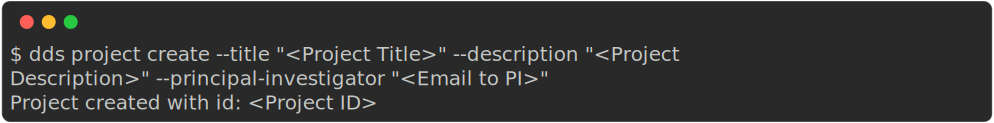
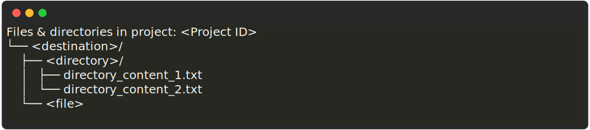

Examples¶
Authentication: dds auth¶
Start authenticated session (“Log in”)¶
After running the command dds auth login, you will be prompted to fill in information in the following order:
Your DDS username
Your DDS password
The password is hidden
Note that the password will not be printed out when you type it; The password is hidden for security purposes.
A 2FA one time code.
Email is default
If you have not configure the 2FA method (see section below), a one time code is sent to your email. If you have set the 2FA method to Authenticator App, the one-time code will be shown in that app.

Forgotten your…
Username? Contact support. Changing username or authenticating with email is currently not possible.
Password? You can reset your password here.
Danger
After completing authentication, dds-cli will automatically save an authentication token file (.dds_cli_token) in the home directory, unless otherwise specified (see the command documentation). dds-cli will use this token as a session when you run future commands.
The token, and therefore the authenticated session, is valid for 7 days.
The token is encrypted but should be kept private.
Change Two-Factor Authentication (2FA) method¶
There are two possible configurations for the Two-Factor Authentication:
Email (default)
A One-Time Code is sent to your registered email address. The code expires when it has been used or after 15 minutes.
Authenticator App
A One-Time Code is displayed in a third-party authenticator app of your choice. A code is valid for 30 seconds.
To set this up:
Install an Authenticator App on your mobile device.
Examples of Authenticator Apps:
Authy
Google Authenticator
Bitwarden
Run
dds auth twofactor configure
When prompted, choose which method you’d like to use (in this case “Authenticator App”)

Follow the instructions from the CLI
End authenticated session (“Log out”)¶
In order to avoid unauthorized users accessing the DDS (and thereby your user-privilages and data) via your account, we recommend that you manually end your session after having run the operations with dds-cli. To end the session, run:
dds auth logout
Manage accounts: dds user¶
Invite another user¶
In order to invite another user to the DDS, you need to specify their email address and the role which their account should have.
dds user add [Email address] --role "<Account role>"
To invite a user to a specific project, or if they already have an account and should be granted access to the project, add the --project option.
dds user add [Email address] --role "<Account role>" --project "<Project ID>"
See also
Granting a user access to a specific project can also be done with the dds project access command.
Manage projects: dds project¶
Create a project¶
dds project create --title "<Project Title>" --description "<Project Description>" --principal-investigator "<Email to PI>"
Note
The email specified in the option --principal-investigator does not receive any emails; It’s only for information purposes at this time.
When the project is created, you should get an output similar to the one below.
Check the current status of a project¶
A newly created project always has the status “In Progress”.
To check the current status of a project, run:
dds project status display --project "<Project ID>"
Changing the project status¶
The command structure when changing a project status is
dds project status <statuschange> --project "<Project ID>"
Check the possible status commands with dds project status --help
Releasing a project¶
Releasing a project changes the project status from “In Progress” to “Available”.
dds project status release --project "<Project ID>"

Manage data: dds data¶
List project contents¶
See also
You can also list project contents with the command dds ls.
Interactively listing¶
The following command will list all contents in the root directory and ask if you want to view files in any directory.
dds data ls --project "<Project ID>"

List full contents (tree)¶
To view all files and directories in a project as a tree structure, use the --tree opton.
dds data ls --project "<Project ID>" --tree

Upload data¶
The general upload command is dds data put.
dds data put --project "<Project ID>" --source "<File or directory to upload>"
Upload to a specific directory¶
To place your uploaded data in a specific (new or existing) directory, use the --destination option. In the example command below we are uploading one file (<file>) and one directory (<directory>) with contents of its own.
dds data put --project "<Project ID>" --source "<file>" --source "<directory>" --destination "<destination>"
After the upload is completed, the project contents will be the following:
Download data¶
Use dds data get to download data.
Download full project contents¶
Use the --get-all option.
dds data get --get-all --project "<Project ID>"
Download specific files or directories¶
Use the --source option to specify which file or directory you want to download within the project. If you want to download multiple individual files or directories, specify the --source option multiple times.
dds data get --source "<1st file or directory>" --source "<2nd file or directory>" [... etc] --project "<Project ID>"
See also
In order to know which files or directories to specify with the --source option, you can first list the project contents. See this example.